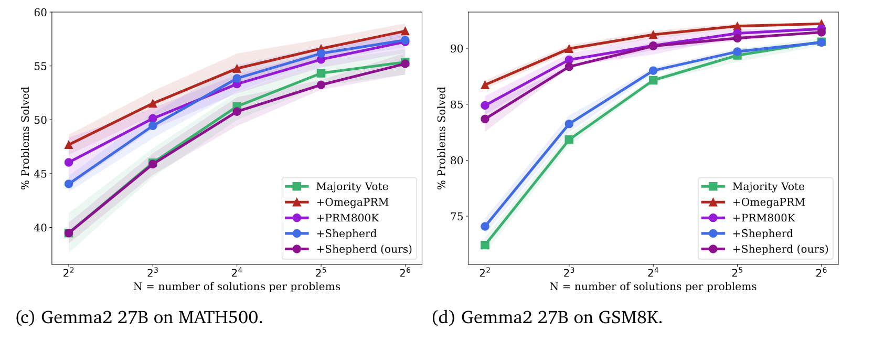
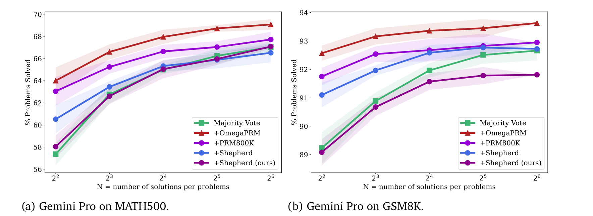
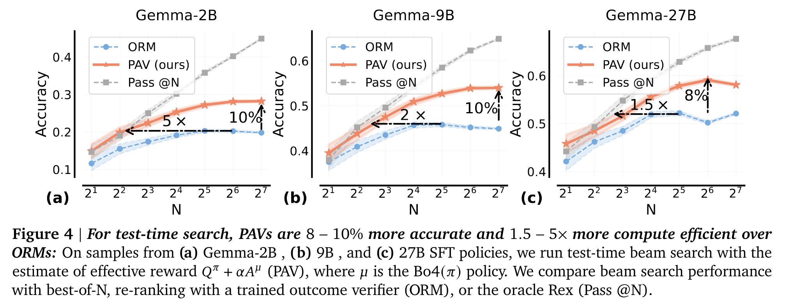
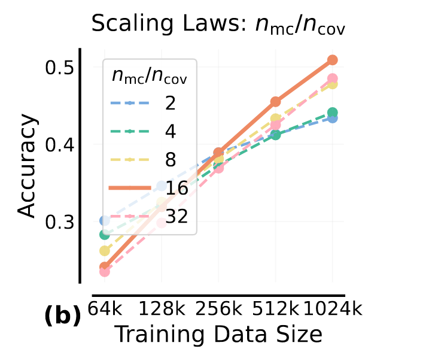

1. Introduction
Enhancing LLMs in complex domains requiring multi-step reasoning, logical consistency, and adherence to procedural constraints remains a critical research challenge. Process Reward Models (PRMs) offer the promise to address some of these limitations by providing fine-grained supervision signals throughout the model’s generation process, both at inference and training. They offer denser credit assignment than Outcome Reward Models (ORMs), but are hard to annotate and often ambiguous since characteristics of a good process vary by domain and difficulty of the problem at hand.
We cover here the theoretical underpinnings of PRMs and review some key works across both general and agentic reasoning.
2. Background
The sequential generation process of an LLM can be modeled as a Markov Decision Process (MDP), where:
- States ($s_t$): Represent the context (prompt) and the sequence generated thus far.
- Actions ($a_t$): Correspond to generating the next token or reasoning step.
- Transitions: Governed by the LLM policy ($\pi_\theta$).
- Rewards ($r(s_t, a_t)$): Reflect the quality of the generated step $a_t$ or the resulting state $s_{t+1}$.
Within this MDP, PRMs can be conceptualized as estimators of different value functions:
-
Action value function ($Q^\pi(s_t, a_t)$): Expected cumulative future reward from state $s_t$ if action $a_t$ is taken. Most PRMs model Q-values to guide the model’s trajectories (e.g., selecting the action with the highest Q-value at each state). Monte Carlo estimates are often used to estimate these values by sampling complete trajectories and averaging observed rewards (see Math-Shephard, OmegaPRM in Section 4). This approach is unbiased and straightforward but can suffer from high variance in long-horizon tasks.
-
State value function ($V^\pi(s_t)$): Expected cumulative future reward from a state; captures the inherent value of being in that state. PRMs acting as critics in actor-critic reinforcement learning setups use this to evaluate state quality, guiding the actor (LLM policy) toward more valuable states.
-
Advantage function ($A^\pi(s_t, a_t)$): Measures the relative benefit of an action compared to the average value of the state. Process Advantage Verifiers (PAVs) [5] aim to estimate this.
3. Data
Obtaining high-quality, step-level supervision data is a key challenge for PRMs. We briefly cover the spectrum of approaches below and their pros and cons before diving into a review of key works.
| Approach | Description | Pros | Cons |
|---|---|---|---|
| Human Annotation | Domain experts label intermediate steps based on criteria like correctness and logic (e.g., OpenAI’s PRM800K [6]) | High-quality, human-verified data | High cost, slow, limited scalability, inter-annotator bias |
| Monte Carlo Estimation / MCTS | Simulate rollouts from a step to estimate its value based on outcome success | Fully automated | Computationally expensive, noisy, quality depends on rollout policy |
| LLM-as-Judge | Use powerful LLMs to evaluate or critique generated steps [7] | Scalable compared to human experts | API/compute cost, LLM bias, judge quality and prompting matter |
| Active Learning | Focuses annotation on high-uncertainty samples from the current PRM (e.g., ActPRM [8]) | Reduces annotation cost, improves learning efficiency | Depends on accurate uncertainty estimation |
| Implicit PRMs | Derives step-level rewards from outcome-only models (ORMs), e.g., PRIME [9] | Highly scalable, no step-level annotation required | Depends on reward parameterization quality, unclear if it scales |
| Other Methods | Includes contrastive learning, self-critique, rationale extraction, binary error search | Creative alternatives, domain adaptable | Often method-specific limitations, may lack generality |
4. Review of Key Works
We cover key works below across general reasoning tasks. Early reasoning PRMs rely solely on Monte Carlo estimates to learn Q-values (Math-Shephard, OmegaPRM), followed by work that shows modeling advantage functions are better (Process Advantage Verifiers), followed by hybrid works that combine MC estimates with LLM-as-a-Judge to improve data quality and even train generative PRMs. The trend for agentic PRMs seems to be tracking reasoning PRMs though it is still in its early days but we don’t cover them here.
Math-Shephard, Feb ‘24
- Contribution: Introduced a method to assign reward scores automatically to each step of mathematical problem solutions and tested its effectiveness in verification (PRM-assisted inference) and RL (PPO with step-by-step rewards).
- Defining Step Quality: The quality of an intermediate step is defined based on its potential to deduce the correct final answer. A step is considered higher quality if completing the reasoning from that step onwards leads to a correct final answer more often than from another step.
- Data: Data was collected using a “completer” LLM to finalize N subsequent reasoning processes (rollouts) starting from a given intermediate step. The step’s potential was estimated based on the correctness of these N rollouts. Two labeling strategies were explored: a “hard estimation” label (1 if at least one rollout was correct, 0 otherwise) and a “soft estimation” label (the proportion of correct rollouts).

- Training: The PRM was trained as a binary classifier using the hard estimation labels and a binary cross-entropy loss, on GSM8K and MATH using 15 sampled solutions per problem.
- Evaluation: The model’s effectiveness was evaluated in verification (reranking LLM outputs based on the minimum step scores) and as a dense reward signal for PPO, on the test set of GSM8K and a subset of 500 representative problems from MATH (MATH500).
- Takeaways: An early work that showed PRMs work but results weren’t super impressive.

OmegaPRM, Dec ‘24
- Contribution: A divide-and-conquer style Monte Carlo Tree Search (MCTS) algorithm for efficient collection of high-quality process supervision data, collecting over 1.5 million high-quality process annotations without human intervention.
- Data: Data is collected using MCTS along with using a binary search to locate the first incorrect step.
-
Binary Search Locator: Given rollouts from steps $1$ to $t$, they use binary search to locate the first incorrect step and then do multiple rollouts from that step to get a Monte Carlo estimate. Starting with a full solution trace, they split it at the midpoint $m$ and performed rollouts from that step $s_{1:m}$. If rollouts from $m$ yielded any correct final answers, the error was likely in the second half; if none were correct, the error was likely in the first half. This binary search helps narrow down the error location in logarithmic time, reducing the time complexity from a brute-force $O(kM)$ to $O(k \log M)$, where $M$ is the sequence length and $k$ is rollouts per search.
-
MCTS: Each node $s$ in the tree contains the question $q$ and prefix solution $x_{1:t}$, together with all previous rollouts from the state. Each edge is either a single step or a sequence of consecutive steps from the node. The nodes also store statistics including:
- $N(s)$ - the visit count of a state
- $MC(s)$ - the Monte Carlo estimation of a state
- $Q(s,r)$ - a state-rollout value function correlated to the chance of selecting a rollout
The value function is defined as $Q(s,r) = \alpha^{1-MC(s)} \cdot \beta^{L_{len(r)}}$ where $\alpha,\beta \in (0,1]$. The first term prioritizes “more correct” states, and the second term adds a length penalty. They define a heuristic that selects the most valuable rollout to search with, using terms “supposed-to-be-correct” (states with $MC(s)$ close to 1) and “wrong-answer” (rollouts with wrong final answers). They prioritize supposed-to-be-correct wrong-answer rollouts during selection, maintain a pool of rollouts, pop a rollout based on PUCT, identify the first error location, and then rollout to build new states which are added to the pool if $0 < MC(s) < 1$.
-
Datasets: They used the training set of the MATH dataset (12K questions) with 100 searches per question to generate 1.5 million per-step process supervision annotations.
-
- Training: The PRM with Gemma-2 as backbone was trained as a binary classification model using the pointwise soft label ($\hat{y}=MC(s)$) as the target. They found this to work best compared to using a hard label ($\hat{y}=1[MC(s)>0]$) or a pairwise Bradley-Terry loss.
- Evaluation: The model was evaluated through weighted self-consistency for verification on MATH500 and GSM8K.
- Takeaways: Still focused on math datasets, took Math-Shephard and scaled it up and showed that it works. Showed that it helps even stronger frontier models like Gemini.


Process Advantage Verifiers (PAVs), Oct ‘24
- Contribution: This work questioned the effectiveness of PRMs based on simple outcome potential, arguing that effective process rewards should measure progress – the change in the likelihood of producing a correct response after taking a step – measured under a prover policy ($\mu$) distinct from the base policy ($\pi$). They show how to do this by measuring process advantages.
- Key Insight: They suggested reinforcing steps showing progress, even in initially incorrect traces, encourages exploration, unlike Q-values which might favor exploitation. This progress should be measured by a prover ($\mu$) that can evaluate steps differently than the policy ($\pi$) being trained. They found that using Best-of-K (BoK) policies derived from the base policy (BoK($\pi$) for K>1) served as effective, complementary provers.
- Data Collection: PAV training data was gathered by sampling $n_{cov}$ seed solution traces from the prover policy (e.g., Bo4). Then, $n_{mc}$ partial rollouts are sampled from the same prover conditioned on prefixes to estimate the Q-value, resulting in triplets $(s,a,Q_{mc}^{\pi}(s,a))$, where $Q_{mc}^{\pi}(s,a)$ is the Monte Carlo estimate. They noted a trade-off: at low data budgets, prioritizing coverage ($n_{cov} > n_{mc}$) was better, while at higher budgets, reducing label noise ($n_{cov} < n_{mc}$) was preferred. The set of provers included the base SFT policies and their BoK policies for $K \in {2^0,\ldots,2^5}$
- Training: The PAV is trained to predict the Q-values using cross-entropy loss, using Gemma as backbone. These PAVs are then used to train policies via online RL, by using the effective reward $Q^{\pi}+\alpha A^{\mu}$ (Q-values under policy $\pi$, Advantage under prover policy $\mu$) as dense, per-step rewards.
- Evaluation: When used to guide beam search, PAVs showed significant gains (>8% accuracy) and compute efficiency (1.5-5x) over ORMs. Using BoK provers (K>1) led to better exploration and improvements than using the base policy as the prover (K=1).
- Takeaways: This work suggests focusing on learning a reward signal representing progress (advantage) rather than just predicted outcome correctness. Training a verifier based on rollouts from a more capable or exploratory prover policy could be key to improving the agent’s own policy via RL or guiding its search process more effectively, leading to better exploration and performance.


The Lessons of Developing Process Reward Models in Mathematical Reasoning, Jan ‘25
- Contribution: Demonstrates that commonly used Monte Carlo (MC) estimation-based data synthesis for PRMs can yield inferior performance and generalization compared to LLM-as-a-judge or human annotations due to noise.
- Key Insight: MC estimation based on completion models is prone to inaccurate step verification due to false positives/negatives, leading to a “process to outcome shift” where the model predicts outcome potential but doesn’t truly understand step correctness. They show that while MC-trained PRMs might perform better on outcome-based metrics, they can show inverse performance on process-specific benchmarks (like ProcessBench, which uses human-annotated process labels to check models’ understanding of process correctness).
- Data: Starts with MC estimation followed by stringent data filtering (e.g., requiring consensus with LLM-as-a-judge, which is Qwen2.5-Instruct-72B) which helps improve label quality. They also find that hard labels (where a response is negative only if none of the 8 completions achieve the correct answer) are better than soft labels when filtered MC data is used.
- Training: Cross-entropy loss for classification.
- Takeaways: One of the first papers that warns against relying solely on MC rollouts, emphasizing the need for data quality awareness. Introduced, I believe, the term process-to-outcome shift which characterizes how existing process rewards often just are masked outcome rewards. Shows how implementing filtering mechanisms or exploring alternative data sources is necessary to train effective and generalizable PRMs.
Process Reward Models That Think, April ‘25
- Contribution: Introduced a Generative PRM (called ThinkPRM) as an alternative approach to discriminative PRMs (that output a score per step). Generative PRMs produce a verification chain (a CoT explaining why a step is correct or incorrect), which allows scaling verification compute by requiring longer justifications and is more interpretable. They show finetuning a LLM helps address issues like prompt sensitivity, invalid judgments, and overthinking observed in LLM-as-a-judge out of the box.
- Data: Data is collected by synthesizing verification chains via rejection sampling. Potential chains generated by an LLM were kept only if they matched gold labels (from a dataset like PRM800K), followed the expected format, and stayed within a token limit, creating a dataset of (step, verification chain) pairs.
- Training: Trained a generative model to produce the verification chain given a step.
- Evaluation: Trained on ~1K synthetic chains and was evaluated on ProcessBench against discriminative PRMs and LLM-as-a-judge (using the same base model). ThinkPRM outperformed both Discriminative PRMs and LLM-as-a-Judge on process evaluation and scaled with verification compute (generating longer chains).
- Takeaways: Interesting proof of concept but relies on the presence of gold labels. Shows how generative verifiers trained on 1K synthetic chains can outperform discriminative verifiers trained on 800K samples from PRM800K.
5. Outlook
We summarize here some possible future research directions for PRMs based on the trend/gaps from the works above.
- Long-horizon tasks - Current PRMs, especially those that rely on MC estimates, won’t scale well to longer horizons due to the increase in variance. The sparsity of outcome-based rewards is also exacerbated in long-horizon tasks. How do we deal with this?
- Step-Level Inductive Priors - Can we move beyond using general rewards as approximations of step rewards to integrate and reinforce fine-grained, step-level inductive priors like logical consistency between steps, adherence to safety constraints or other domain-specific heuristics that define a high quality process?
- Reward Hacking is currently not well studied for PRMs.
- Studying Effectiveness of Rewards - what form of rewards (scalar values, textual feedback, preference scores) align best with agents?
References
- Improve mathematical reasoning in language models by automated process supervision. https://arxiv.org/abs/2406.06592
- PROCESS REWARD MODEL WITH Q-VALUE RANKINGS https://arxiv.org/pdf/2410.11287
- Process Reward Models for LLM Agents: Practical Framework and Directions https://arxiv.org/abs/2502.10325
- Do We Need to Verify Step by Step? Rethinking Process Supervision from a Theoretical Perspective, https://arxiv.org/html/2502.10581v2
- Rewarding Progress: Scaling Automated Process Verifiers for LLM Reasoning https://openreview.net/forum?id=A6Y7AqlzLW
- Let’s Verify Step by Step | OpenAI, https://cdn.openai.com/improving-mathematical-reasoning-with-process-supervision/Lets_Verify_Step_by_Step.pdf
- The Lessons of Developing Process Reward Models in Mathematical Reasoning https://arxiv.org/pdf/2501.07301
- Efficient Process Reward Model Training via Active Learning - arXiv, accessed April 22, 2025, https://arxiv.org/html/2504.10559v1
- Process Reinforcement through Implicit Rewards https://arxiv.org/abs/2502.01456
- Improve Mathematical Reasoning in Language Models by Automated Process Supervision https://arxiv.org/pdf/2406.06592
- Math-Shepherd: Verify and Reinforce LLMs Step-by-step without Human Annotations https://arxiv.org/abs/2312.08935
- Process Reward Models That Think https://arxiv.org/abs/2504.16828
- Watch Every Step! LLM Agent Learning via Iterative Step-Level Process Refinement https://aclanthology.org/2024.emnlp-main.93.pdf
- STeCa: Step-level Trajectory Calibration for LLM Agent Learning https://arxiv.org/pdf/2502.14276
- StepTool: Enhancing Multi-Step Tool Usage in LLMs through Step-Grained Reinforcement Learning https://arxiv.org/pdf/2410.07745
- AgentRM: Enhancing Agent Generalization with Reward Modeling https://arxiv.org/pdf/2502.18407
Appendix
A statistical side note - Process supervision is assumed to be statistically more efficient due to denser signals, justifying the high cost of step-level data collection. But a recent theoretical work suggests that, under standard assumptions, RL with outcome supervision may not be statistically harder than with process supervision (up to polynomial factors) and implies the empirical performance gap favoring PRMs might stem from algorithmic limitations in utilizing sparse rewards, rather than fundamental statistical necessity.
Other notable directions -
- Process Q-value Model (PQM) , Feb ’25 - ranking loss instead of classification loss
- PRIME (Feb’25) - learns an implicit PRM using token level rewards based on outcome